조경산업기사 (2009-08-30 기출문제)
1과목: 조경계획 및 설계
1. 다음 중 근린생활권근린공원(주로 인근에 거주하는 자의 이용에 제공할 것을 목적으로 하는 근린공원)의 유치거리 및 규모 기준으로 맞는 것은? (단, 도시공원 및 녹지 등에 관한 법률 시행규칙상의 기준을 따른다.)
- 유치거리 : 1km 이하, 규모 : 제한 없음
- 유치거리 : 250m 이하, 규모 : 30,000 m2 이상
- 유치거리 : 500m 이하, 규모 : 10,000 m2 이상
- 유치거리 : 1km 이하, 규모 : 1,500 m2 이상
(정답률: 60%)

2. 다음 ( ) 안에 공통적으로 들어갈 용어는?
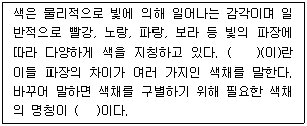
- 색지각
- 색감각
- 색상
- 채도
(정답률: 64%)
3. 조경에 관한 설명으로 가장 적합한 것은?
- 주로 환경 속에 실체로서 나타난 건물의 계획이나 설계에 관련된 분야
- 도로, 교량, 지형변화, 댐, 상·하수 설비 등의 설계와 공법에 관련된 분야
- 외부공간을 주 대상으로 하며, 미적인 측면을 강조하몃너, 최종적인 환경의 모습에 관심이 있는 분야
- 도시의 물리적 골격과 형태에 관심을 갖는 분야
(정답률: 86%)
4. 궁전(宮殿) 건물터와 조산(造山) 및 원지(苑池)의 유적이 함께 있는 고구려의 궁지는?
- 안학궁지(安鶴宮址)
- 북원궁지(北園宮址)
- 남도원궁지(南桃園宮址)
- 수창궁지(壽昌宮址)
(정답률: 81%)
5. 조선시대 궁궐이나 상류주택의 정원은 다른 시대와 비교해 어느 부분이 특히 발달하였는가?
- 전정(前庭)
- 중정(中庭)
- 후원(後苑)
- 주정(主庭)
(정답률: 75%)
6. 아래 그림은 한 변이 주어진 정육각형을 작도하는 방법 설명이다. 틀린 것은?
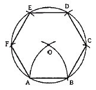
- 주어진 선분 AB를 반지름으로 원호를 그려 점 O를 구한다.
- 점 O를 중심으로 OB를 반지름으로 하는 원을 그린다.
- 점 O를 중심으로 OB의 길이로 원주를 차례로 나눈다.
- 점 BCDEFA를 차례로 연결한다.
(정답률: 75%)
7. 실외에 설치하는 성인용 평벤치(3인용)의 규격으로 가장 적당한 것은? (단, KS G 4213의 기준을 적용한다.)
- 좌면의 높이 20 ~ 30cm, 좌면의 폭 20 ~ 30 cm 내외
- 좌면의 높이 30 ~ 35cm, 좌면의 폭 35 ~ 45 cm 내외
- 좌면의 높이 35 ~ 45cm, 좌면의 폭 40 ~ 50 cm 내외
- 좌면의 높이 43 ~ 48cm, 좌면의 폭 45 ~ 60 cm 내외
(정답률: 53%)
8. 어린이 놀이시설물의 설계시 가장 먼저 고려해야 할 사항은?
- 어린이의 신체치수와 동작치수를 고려한다.
- 미적 감각으 나타내어 흥미 있게 한다.
- 모험심을 주도록 해야 한다.
- 기능적이어야 한다.
(정답률: 80%)
9. 자연에 은둔하여 산천을 가꾸고 즐기는 중국의 자연관과 가장 밀접한 것은?
- 유교사상
- 도교사상
- 노장사상
- 불교사상
(정답률: 52%)
10. 도시공원은 다음 중 어느 오픈스페이스에 속하는가?
- 사유 오픈스페이스
- 준사유 오픈스페이스
- 공공 오픈스페이스
- 준공공 오픈스페이스
(정답률: 70%)
11. 도시지역에 생육하고 있는 식물 집단 가운데 인위적으로 도입된 외래수종들로서, 유지관리에 많은 비용이 소비되면서도 도시경관을 획일적으로 만드는 종류들을 무엇이라 하는가?
- 향토식물 군집
- 자생식물 군집
- 자연화된 식물군집
- 재배된 식물집단
(정답률: 80%)
12. 관광지, 유원지 또는 국립공원의 집단시설지구 등의 계획을 할 때 활용하는 수용력 산정에 관한 공식이다. 다음 중 가장 옳게 된 산식은?
- 최대일율 = 년간 이용자수 / 최대일 이용자수
- 최대일율 = 최대일 이용자수 / 년간 이용자수
- 최대일율 = 최대시 이용자수 / 최대일 이용자수
- 최대일율 = 회전율 / 년간 이용자수
(정답률: 62%)
13. 파노라믹 경관(panoramic landscape)에 대한 설명으로 틀린 것은?
- 180° ~ 360° 의 넓은 시야를 갖는다.
- 전경 혹은 중경이 전체경관 구성 상태를 제한하는 경우가 드물다.
- 시선이 수직선으로 유도된다.
- 해방감을 만끽할 수 있다.
(정답률: 89%)
14. 다음 중 조경계획 시 보전(conservation) 운동이 추구하는 사항으로 옳은 것은?
- 우수한 경관을 보전하고 그 주변에 주거공간을 배치
- 도시확산과 난개발 촉진
- 해변, 백사장, 오픈 스페이스의 여가이용 접근을 차단
- 수용능력 논리 대신에 형식적 지역지구제에 의거한 토지 이용관리 도입
(정답률: 58%)
15. 국토의 계획 및 이용에 관한 법률에서 정하는 용도지구의 분류에 해당하지 않는 것은?
- 고도지구
- 방재지구
- 보존지구
- 농림지구
(정답률: 19%)
16. 대지 면적이 400m2, 건폐율이 50%인 곳에 건폐율 전체를 1층 바닥면적으로 지어진 4층 건물이 위치하고 있다. 연상 면적(m2)은 얼마인가?
- 400
- 800
- 1600
- 3200
(정답률: 66%)
17. 원지에 3개의 방도(方島)가 있는 곳은?
- 경회루 원지
- 광한루 원지
- 운조루 원지
- 임대정의 원지
(정답률: 59%)
18. 8세기 하하(ha-ha)수법의 창안자로 알려진 사람은?
- 브리지맨(C. Bridgeman)
- 케트(W. Kent)
- 브라운(L. Brown)
- 챔버(W. Chamber)
(정답률: 63%)
19. 일반적으로 조형미의 표현에서 리듬(rhythm)이 갖는 효과라고 볼 수 없는 것은?
- 약동감을 준다.
- 기분이나 속도감을 표현한다.
- 초점을 강조하거나 공간을 충실하게 한다.
- 반복에 의한 리듬으로 강한 대비를 얻을 수 있다.
(정답률: 43%)
20. 슈브룰(chevreul)의 색채 조화론에서 2가지 색을 조합해서 좋은 조화를 얻지 못하는 때 그 사이에 어떠한 색들을 삽입하면 배색을 좋게 할 수 있는가?
- 적색, 황색, 등색
- 백색, 청색, 적색
- 백색, 흑색, 회색
- 청색, 녹색, 자색
(정답률: 47%)
2과목: 조경식재
21. 조경에 있어 관련과 대립의 구성에 의한 배식의 설명으로 틀린 것은?
- 2그루의 수목을 서로 근접시켜서 식재하면 서로 관련되어 보인다.
- 2그루의 수목을 식재할 때 양자의 높이의 합계보다 양자간의 거리가 클 때 서로 대립되어 보인다.
- 둥근 향나무와 같은 형태의 수종으로 열식할 때 적어도 한 시야에 3그루는 들어올 수 있도록 식재해야 한다.
- 가로수는 서로 대립되도록 식재하여 단조로움을 피하도록 해야 한다.
(정답률: 48%)
22. 기능에 따른 고속도로 식재 중 시선유도식재(視線誘導植栽)에 관한 설명으로 부적합한 것은?
- 곡선부의 안쪽에는 시거(視距)에 방해를 주므로 식수하지 않는다.
- 산형(crest)구간에 선형이 산형을 이루고 있는 곳에서는 산 정상부에 교목을 심고 약간 내려간 곳에 낮은 나무를 심는다.
- 골짜기(sag)구간에 선형이 골짜기를 이루고 있는 곳에서는 가장 낮은 부분을 피해서 식재하는 것이 좋다.
- 곡선부의 전면에는 관목을 배식한다.
(정답률: 50%)
23. 정형식 식재에서 열식을 변형한 방법으로 식재 폭을 넓히기 위해 쓰이는 식재는?
- 교호식재
- 표본식재
- 부등변삼각식재
- 임의식재
(정답률: 60%)
24. 건물, 담장, 울타리, 산울타리를 배경으로 하여 그 앞쪽에 장방형으로 길게 만들어 한쪽에서만 바라볼 수 있게 조성한 화단은?
- 리본화단(ribbon flower bed)
- 카펫화단(carpet flower bed)
- 기식화단(assorted flower bed)
- 경재화단(flower boarder)
(정답률: 71%)
25. 수목 생육지의 토성은 산성, 중성, 알칼리성으로 구분할 수 있는데, 다음 중 산성토양에서 비교적 잘 자라는 수종들로만 짝지어진 것은?
- 상수리나무, 일본잎갈나무
- 느티나무, 물푸레나무
- 단풍나무, 서어나무
- 회양목, 개나리
(정답률: 56%)
26. 조경식재 설계의 물리적 요소에 해당하는 것은?
- 통일성
- 질감
- 균형
- 연속
(정답률: 64%)
27. 다음 중 내한성, 내조성이 강하고 공해에 강한 강음수로서 군식, 생울타리 또는 경계 식재용으로 쓰이는 상록활엽소교목은?
- 감탕나무
- 회양목
- 꽝꽝나무
- 백정화
(정답률: 45%)
28. 나들목(인터체인지) 식재요령에서 식재금지 표시 구역은 어느 위치인가?
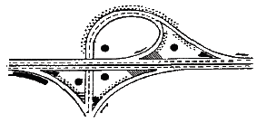
(정답률: 79%)
29. 다음 보기의 관개(灌漑) 방법은?
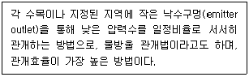
- 점적식 관개법(drip irrigation)
- 살수 관개법(sprinkler irrigation)
- 지표 관개법(surface irrigation)
- 지하 관개법(sub-surface irrigation)
(정답률: 78%)
30. 음수에서 고사 한계의 최소 수광량은 전수광량(하늘에서 내리 쬐는 광량)의 몇 % 인가?
- 3%
- 5%
- 6.5%
- 15%
(정답률: 53%)
31. 소나무류의 침엽(針葉) 구분이 맞는 것들로만 짝지어진 것은?
- 2엽 : 소나무, 반송
- 3엽 : 백송, 섬잣나무
- 4엽 : 방크스소나무, 리기다소나무
- 5엽 : 소나무, 스트로브잣나무
(정답률: 69%)
32. 우리나라 온대림 고유 임상의 극상림 우점종은?
- Carpinus laxiflora Blume
- Pinus densiflora Siebold & Zucc.
- Quercus acutissima Carruth.
- Rhus javanica L.
(정답률: 49%)
33. 다음 그림과 같은 형태를 갖고 있는 수종은?
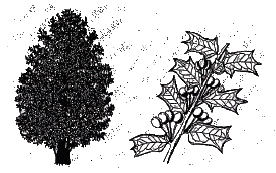
- Hemiptelea davidii Planch.
- Ilex corunuta Lindl. & Paxton
- Eleutherococcus sessiliflorus S. Y. Hu
- Tilia megaphylla Nakal
(정답률: 57%)
34. 다음 중 봄에 잎이 나오기 전 흰색 꽃이 피는 수종은?
- Forsythia koreana Nakai
- Hibiscus syriacus L.
- Magnolia denudata Desr.
- Punica granatum L.
(정답률: 65%)
35. 다음 중 다른 수종에 비해 아황산가스에 견디는 힘이 강한 수종은?
- 굴거리나무
- 매화나무
- 느티나무
- 전나무
(정답률: 65%)
36. 다음 중 자웅이주인 수목은?
- 측백나무
- 사방오리나무
- 꽝꽝나무
- 양버즘나무
(정답률: 30%)
37. 높이가 5m인 수목을 이용하여 녹음식재를 할 때 그림자의 길이(m)로 가장 적합한 것은? (단, 태양고도는 30°이며, tan30° ≒ 0.577 이다.)
- 2.89
- 4.34
- 7.89
- 8.67
(정답률: 31%)
38. 다음 식물로 입면녹화를 하려고 할 때 겨울철에도 푸른 모습이 가능한 덩굴성 식물들로만 짝지어진 것은?
- 줄사철, 모람
- 담쟁이덩굴, 등수국
- 으름, 개다래
- 으아리, 노박덩굴
(정답률: 25%)
39. 고속도로 중앙분리대 식재에서 분리대가 넓은 경우에 주로 사용하는 방법으로 짧은 산울타리를 운전자의 시선과 직각이 되도록 짧게 가로로 배열하는 방식은?
- 랜덤식
- 루버식
- 평식법
- 열식법
(정답률: 43%)
40. 다음 중 지엽 밀도(visual density)가 가장 높은 수종은?
- Juniperus chinensis L.
- Robinia pseudoacacia L.
- Quercus xurticaefolia Blume
- Sophora japonica L.
(정답률: 32%)
3과목: 조경시공
41. 포장되지 않은 나대지(裸垈地)에 빗물이 흐를 경우 표면 경사가 약 몇 %를 넘으면서부터 침식이 시작되는가?
- 1%
- 2%
- 2.5%
- 5%
(정답률: 24%)
42. 도로의 수평 노선 곡선부에서 반경이 30m, 교각이 15° 로 한다면 이 수평노선의 곡선장은 얼마인가?
- 약 1.25 m
- 약 2.5 m
- 약 7.85 m
- 약 8.5 m
(정답률: 50%)
43. 강우 강도 공식 중 Talbot 형은? (단, I는 강우강도, t는 강우계속시간, a, b, c 는 상수이다.)
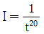
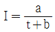
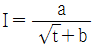
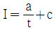
(정답률: 62%)
44. 단위 중량이 750 kgf/m3인 목재를 사용하여 가로 2m, 세로 3.5m, 두께 6cm인 목재 데크를 만들었다. 이 목재 데크의 고정하중(kgf)은?
- 31.5
- 315
- 420
- 3150
(정답률: 48%)
45. 공사계약에 관한 설명 중 틀린 것은?
- 공사를 전문공사별, 공정별, 공구별 등으로 나누어 2인 이상에게 주는 도급을 공동도급이라 한다.
- 경력, 신용, 기술 등을 고려하여 공사에 적격한 3~7개 업자를 선정하여 입찰에 참여시키는 것을 지명경쟁입찰이라 한다.
- 건축주가 시공에 가장 적합하다고 인정하는 단일 업자를 선정하여 발주하는 방식을 수의계약이라 한다.
- 입찰의 절차는 현장 설명을 끝낸 후 일정시간 경과 후에 행한다.
(정답률: 29%)
46. 평판측량시 평판의 표정(標定) 조건이 아닌 것은?
- 정치(整置)
- 치심(致心)
- 교회(交會)
- 정위(定位)
(정답률: 40%)
47. 그림을 중앙단면법에 의해 토량을 계산한 값은 얼마인가?
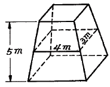
- 12 m3
- 20 m3
- 30 m3
- 60 m3
(정답률: 50%)
48. 학교 운동장의 한쪽 끝에서 다른 쪽 끝까지의 수평거리가 80m인 곳에 한쪽은 다른 한쪽 끝보다 4m가 더 높다. 이 때 이 운동장의 경사도는 얼마인가?
- 3%
- 4%
- 5%
- 20%
(정답률: 39%)
49. 점적식 관개에 쓰이는 에미터(emitter)에 관한 설명 중 틀린 것은?
- 에미터는 주로 교·관목이나 지피식물 관개에 이용된다.
- 에미터는 보행공간에 설치되어야 유지 관리가 용이하다.
- 에미터 주변에는 자갈을 채워 출구들이 막히는 현상을 방지해야 한다.
- 에미터에 의한 관수는 희석효과가 있어 근부의 염분축적이 감소된다.
(정답률: 67%)
50. 비탈면처리 공법으로 이용되는 종자 뿜어붙이기 공법에 관한 설명으로 틀린 것은?
- 초본류만을 사용하면 근계층이 얕기 때문에 비탈면이 박리되기 쉬우므로 필요시 목본류와 혼파한다.
- 한 종류의 발생기대본수는 가급적 총 발생기대본수의 10% 이하로 내려가지 않도록 한다.
- 흙을 혼합하여 시공하는 경우는 비교적 소면적의 완만한 경사의 비탈면에 적당하다.
- 흙을 혼합하지 않고 시공하는 경우는 성토 비탈면에 적당하다.
(정답률: 32%)
51. 조명등의 높이가 2배로 높아졌을 때 조명등의 수직 아래 지면의 조도는 높아지기 전에 조도에 몇 배인가? (단, 직사조도방법을 활용한다.)
- 4배
- 2배
- 1/2배
- 1/4배
(정답률: 50%)
52. 내수성과 내열성이 우수하여 유리섬유를 보강하면 500℃ 이상 고열에도 수 시간으 견딜 수 있는 합성수지의 종류는?
- 에폭시수지
- 실리콘수지
- 페놀수지
- 멜라민수지
(정답률: 56%)
53. 옹벽의 구조설계시 역학적 필수 검토 사항으로만 조합된 것은?
- 모멘트, 미끄러짐, 처짐
- 처짐, 뒤틀림, 휨
- 지지력, 모멘트, 미끄러짐
- 재료의 내구성, 시공방법, 시공기한
(정답률: 59%)
54. 시멘트의 혼화재료(混和材料)에 대한 설명 중 틀린 것은?
- 시멘트, 물, 골재 이와의 재료로서 시멘트의 한 성분으로 넣는 재료이다.
- 아직 굳지 않는 콘크리트의 성질을 개선하는데 필요하다.
- 혼화재료는 혼화재와 혼화제로 나눈다.
- 혼화재는 사용량이 적어서 그 자체의 체적이 콘크리트의 배합에서 무시할 수 있다.
(정답률: 53%)
55. 다음 중 인조암을 만드는데 사용되는 재료로 가벼우면서도 강도가 강하여 옥상조경에 많이 사용되며, 난연재이며 착색이 자유로우나, 자연 식생의 착생이 어려운 것은?
- ERP(fiber glass reinforced polyster) rock
- GRC(glass fiber reinforced cement) rock
- 우레탄수지 발포암
- 콘크리트 인조암
(정답률: 42%)
56. 네트워크(Net Work)공정표의 특징 설명 중 틀린 것은?
- PERT 방식은 공사비 절감에 주목적이 있으며, CPM 방식은 공사기간 단축에 목적이 있다.
- 크리티컬 패스(Critical path) 또는 이에 따르는 길에 주의하면 다른 작업에 계획누락이 없는 한 공정이 원만하게 추진되어 공정관리가 편리하다.
- 공정표를 능숙하게 작성하기 위해 시간과 경험이 요구된다.
- 공사계약 관리면에서 신뢰도가 높다.
(정답률: 50%)
57. 공사를 서두를 때나 겨울철의 공사에 가장 적합한 시멘트는?
- 알루미나시멘트
- 중용열포틀랜드시멘트
- 조강포틀랜드시멘트
- 고로시멘트
(정답률: 40%)
58. 심토층 배수체계 중 자연형에 대한 설명으로 틀린 것은?
- 지형의 기복이 심한 소규모 공간 내 물이 정체되는 곳에 설치한다.
- 주선은 짧고 지선이 긴 것이 좋다.
- 주선은 자연수로 따르도록 하고 지선은 등고선과 평행하도록 배치하는 경우 지선은 마찰계수가 작은 관을 사용한다.
- 주선은 자연수로를 따르돌고 하고 지선이 등고선에 직각으로 배치하는 경우 지나친 유속으로 인한 배수관 피해방지를 위한 조치를 필요하다.
(정답률: 41%)
59. 그림에서 지점 A 의 반력(tonf)은 얼마인가?
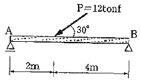
- 2
- 4
- 5
- 6
(정답률: 44%)
60. 사고석 담장의 줄눈 중 가장 일반적인 것은?
- 내민줄눈
- 평줄눈
- 오목줄눈
- 민줄눈
(정답률: 58%)
4과목: 조경관리
61. 다음 중 수목 관리시 수목 생육에 필요한 다량원소가 아닌 것은?
- K
- Ca
- Fe
- S
(정답률: 57%)
62. 한국잔디의 시비관리 방법으로 옳지 않은 것은?
- 한국잔디의 시비는 주로 봄, 여름에 많이 한다.
- 한국잔디는 병해가 심하므로 여름철 고온기에는 시비를 하지 않는다.
- 한국잔디는 강하지만 시비할 때는 밑거름과 덧거름으로 나누어 준다.
- 한국잔디의 시비는 연간 3 ~ 4회면 충분하다.
(정답률: 42%)
63. 표면 배수시설 중 미관은 아름답지만 관리상 기존의 원형을 유지하기가 비교적 어려운 측구는?
- 토사측구
- 잔디측구
- 돌붙임측구
- 콘크리트측구
(정답률: 58%)
64. 외과수술 과정의 순서가 올바른 것은?
- 부패부제거 → 표면경화처리 → 소독·방부처리 → 공동충전 → 방수처리 → 인공수피처리
- 부패부제거 → 표면경화처리 → 방수처리 → 소독·방부처리 → 공동충전 → 인공수피처리
- 부패부제거 → 소독·방부처리 → 공동충전 → 방수처리 → 표면경화처리 → 인공수피처리
- 부패부제거 → 공동충전 → 소독·방부처리 → 방수처리 → 표면경화처리 → 인공수피처리
(정답률: 70%)
65. 다음 중 운영관리 계획에서 양적변화에 대한 관리에 해당 하지 않는 것은?
- 부족이 예측되는 시설의 증설
- 이용에 의한 손상이 생기는 시설의 보충
- 내구연한이 된 각종 시설물
- 이용객의 연령에 따른 대응
(정답률: 82%)
66. 소나무 혹병의 중간 기주 식물은?
- 졸참나무, 신갈나무
- 송이풀, 까치밥나무
- 황벽나무
- 향나무
(정답률: 25%)
67. 가을에 수목들의 줄기 중간 부분에 짚이나 거적을 감아두는 이유는?
- 겨울을 나기 위해 내려오는 벌레들을 속에 숨어들게 하였다가 봄에 태워 죽이기 위해
- 겨울철에 동해를 예방하기 위해 추위에 취약한 부분을 감싸주는 효과를 위해
- 운전자로 하여금 나무의 위치를 명확히 하여 가로수를 보호하기 위해
- 지주목을 묶어야 할 나무줄기의 부위를 감아 나무껍질을 보호하기 위해
(정답률: 62%)
68. 단풍나무의 굵은 가지를 자르고자 할 때 가장 무난한 시기는?
- 3 ~ 4월
- 5 ~ 6월
- 10 ~ 11월
- 12 ~ 2월
(정답률: 40%)
69. 주민참여에 의한 공원관리 활동 내용에 대하여 행정부서와 주민단체와의 관계 설정 내용으로 적합하지 않은 것은?
- 주민단체의 공원관리활동에 대한 보조
- 주민단체에 위탁
- 주민단체의 자발적인 행위
- 주민단체와의 계약관계
(정답률: 50%)
70. 배나무 적성병(붉은별무늬병)의 중간 기주는?
- 은행나무
- 향나무
- 느티나무
- 오동나무
(정답률: 61%)
71. 다음 중 알칼리성 토양에서 일반적으로 결핍되기 가장 쉬운 성분은?
- Ca
- Mg
- Mo
- Mn
(정답률: 19%)
72. 시비에 대한 설명 중 적당하지 않은 것은?
- 추비(追肥)는 일반적인 수종에서는 눈이 움직일 무렵, 화목(花木)의 경우에는 개화 직후에 준다.
- 비료는 수관선(樹冠線)을 따라 20cm 내외의 홈을 파서 주는 것이 효과적이다.
- 화목류에는 7 ~8월경 인산질 비료를 많이 주어야 화아형성을 촉진한다.
- 지효성의 유기질 비료는 덧거름으로, 황산암모늄과 같은 속효성 비료는 밑거름으로 준다.
(정답률: 34%)
73. 콘크리트의 균열 부위가 폭 0.2mm 이하일 경우에 주로 사용되는 것으로 표면을 청소한 후 에폭시계 재료를 폭 5cm, 깊이 3mm 정도로 도포하는 보수공법은?
- 표면실링공법
- V자형절단공법
- 고무압식주입공법
- 표면절단공법
(정답률: 55%)
74. 잔디밭에서의 재배적 잡초 방제법에 대한 설명으로 부적당한 것은?
- 잔디를 자주 깍아 준다.
- 통기 작업으로 토양 조건을 개선한다.
- 토양에 수분이 과잉되지 않도록 한다.
- 잡초의 생육이 왕성할 시기에는 비료를 주지 않는다.
(정답률: 45%)
75. 수용능력(carrying capacity)에 대한 다음 설명 중 가장 거리가 먼 것은?
- 수용능력은 생태계 관리를 위한 초지용량, 산림용량 등의 지속산출(sustained yield)의 개념에서 출발하였다.
- 레크레이션 수용능력은 공간의 물리적 생물적 환경과 이용자의 행락의 질에 악영향을 주지 않는 범위의 이용수준을 말한다.
- 수용능력은 경험적으로 느껴지는 것으로 엄밀한 산정은 불가능하기 때문에 어떤 공간에 대한 수용능력의 산출과 계량화는 무의미한다.
- 이용자 자신에 의해 지각되는 일정 행위에 대한 적정 이용밀도를 생리적 수용능력이라고 말할 수 있다.
(정답률: 58%)
76. 일반적으로 조경시설물의 유지관리 계획을 작성할 때 기준으로 이용하는 시설물의 내용 년수가 가장 긴 것은?
- 모래자갈포장
- 목재파고라
- 플라스틱벤치
- 콘크리트벤치
(정답률: 60%)
77. 살충제 50% 유제 100cc를 0.⑤%로 희석하고자 할 때 요구되는 물의 양은? (단, 비중은 1 이다.)
- 110 L
- 90 L
- 99 L
- 99.9 L
(정답률: 46%)
78. 낙엽, 볏짚, 콩깍지 등으로 멀칭(Mulching)했을 시의 효과로 보기 어려운 것은?
- 토양수분의 투수력 증진
- 토양비옥도 증진
- 잡초발생의 억제
- 토양고결화 촉진
(정답률: 54%)
79. 솔잎혹파리는 어떤 부류의 해충인가?
- 흡즙성 해충
- 식엽성 해충
- 천공성 해충
- 충영형성 해충
(정답률: 54%)
80. 다음 중 공원 내 안전관리에 따른 사항 중 사고의 종루에 해당하지 않는 것은?
- 설치하자에 의한 사고
- 관리하자에 의한 사고
- 자동차에 의한 사고
- 이용자, 보행자, 주최자 등의 부주의에 의한 사고
(정답률: 78%)